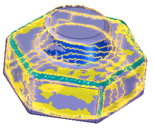
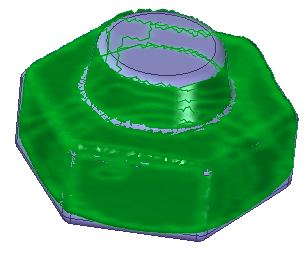
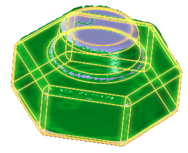
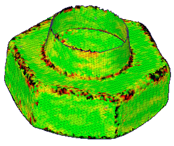
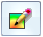

Analyze the deviation between two objects
-
Choose Reverse Engineering tab→Inspect group→Deviation Analysis
 .
. -
Click a reference object. You can use the Select option to set the reference object to a face, feature, or body.

-
Click Accept
 .
.
-
Click a test object. You can use the Select option to set the test object to a face, feature, or body.
Note:Both the reference object and test objects cannot be B-Rep bodies. One must be a mesh body.

-
Click Accept
.You are placed in the Results step, which displays the color map of the deviation between the two bodies.

-
On the Deviation Analysis command bar, click the Options button .
-
On the Deviation Analysis Settings dialog box, set the options for the analysis and then click Close.
After completing the analysis, you can do either of the following:
-
To display the maximum and minimum value markers on the model, click the Show Max and Min markers button

. -
to display the Deviation Analysis dialog box that contains information for the analysis, click the Show Results Information Dialog button . The information is available in text so that you can copy it and use it in reports.
How do I
Create a sketch from a section curveLearn more
Reverse Engineering workflowReverse engineering example
Look up more details
Delete Mesh commandFill Holes command
Smooth Mesh command
Align command
Align command bar
Remesh command
Remesh Options dialog box
Automatic regions command
Manual regions command
Extract surfaces command
Fit surfaces command
Deviation Analysis command
Deviation Analysis command bar
Deviation Analysis Settings dialog box
Section Sketches command
Section Sketches command bar
Section Sketches Options dialog box